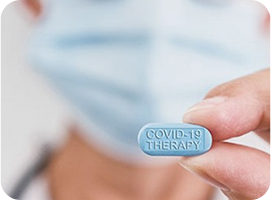

CORPRATE PROMOTION
함께하는 SDS.
실천하고 실현하는 도전정신으로 건강하고 풍요로운 내일을 만들어 가겠습니다.
삼천당 소식
신뢰를 바탕으로 행동하며 사고하고 미래를 창조하는 삼천당제약입니다
Total 38 | 1 Page
-

NEWS
신약 개발 전쟁터, 기사회생 기회 얼마든지 있다
매일 신약 개발 전쟁터에서 승전과 패전의 소식이 들려온다. 최선의 노력을 다했음에도 아쉽게 유효한 효능과 유해하지 않은 독성의 조건을 충족시키는 문턱을 넘지 못한 물질들의 비보와 수많은 역경과 고비를 넘기
2025-08-18
-

NEWS
“성공? 실패?” 임상시험 결과 둘러싼 갑론을박의 진실
바이오 분야, 특히 신약 개발의 임상시험에서 도출된 하나의 연구 결과를 놓고 성공이냐 실패냐에 대한 논쟁이 벌어지는 건 드문 일이 아니다. 임상 결과에 대해 완벽하지는 않지만, 임상시험의 목표를 충족시켰기 때문에 실패가 아닌 부분
2025-08-14
-
NEWS
봄을 기다리는 바이오 업계가 동면하며 할 일들
‘겨울이 왔다.’ 바이오 투자 업계가 얼어붙었다는 위기의식이 고개를 들 때 흔히 나오는 표현이다. 누군가는 ‘지독한 가뭄’으로 표현하기도 한다. 언제쯤 이 혹독한 시련이 끝날지 모두가 궁금해하고 있다. 그만큼 바이오 업계 종사자들에게는 무척이나 힘들고 어려운 시기임에 틀림없다. 과연 바이오 투자 환경에 봄이 올까,
2025-08-12
-
NEWS
바이오 업계 공모 흥행 실패의 공포!“ 옥석 가리기 시작”
코로나19 팬데믹(pandemic·감염병 대유행)이 차츰 정상화되면서 바이오산업계에 종사하는 지인들과 크고 작은 모임도 조금씩 늘었다. 요즘 그런 모임에서 단골로 오르내리는 단어가 ‘흥행’이다. 바이오산업계에선 흥행코로나19 팬데믹(pandemic·감염병 대유행)이 차츰 정상화되면서 바이오산업계에 종사하는 지인들과 크고 작은 모임도 조금씩 늘었다. 요즘 그런 모임에서 단골로 오르내리는 단어가 ‘흥행’이다. 바이오산업계에선 흥행
2025-08-11
-

NEWS
빅데이터·AI 내세우는 바이오社 가치는 사업화 역량에 좌우
최근 뉴스에 가장 많이 오르내리는 주제는 빅데이터와 인공지능(AI)이다. 도깨비방망이처럼 뚝딱 원하는 물건을 만들어주는 만병통치약으로 홍보되고 있다. 바이오 산업에서도 빅데이터와 AI가 주목받고 있으며, 이를 비즈니스 모델로 내세우는 기업들의 도전이 이어진다.
2025-08-11
-
NEWS
코스닥 시장 특례 상장 가이드라인의 한계
회사를 운영하기 위해서는 돈이 필요한데, 이 운영 자금을 마련하기 위한 방법의 하나가 상장(上場)이다. 상장이 되면 비교적 원활하게 자금을 직접 조달할 수 있다는 장점 외에도 상장 법인으로서 일반 법인과는 달리 여러 가지 법률적인 혜택을 누릴 수 있다. 또한 우리 사주 배정 및 회사 지명도 제고를 통한 우수한 인재 유치 및 고용 유지 등의 부가적인 효과도 막대하다.
2025-08-01
-
NEWS
전자의무기록(EMR) 기업, 데이터 결국 잘 활용해야 생존한다
환자들의 전자의무기록(EMR·Electronic Medical Record)을 여러 목적으로 사용 가능한 데이터로 전환하고 수집하겠다고 주장하는 바이오 업체가 많이 생겼다. 대개 수억 명의 환자 데이터를 보유하고 있다가 학문적으로 필요할 때 서로에게 제공해 각자의 목적에 맞게 이용하거나, 이를 산업화·상용화 할 수 있는
2025-07-30